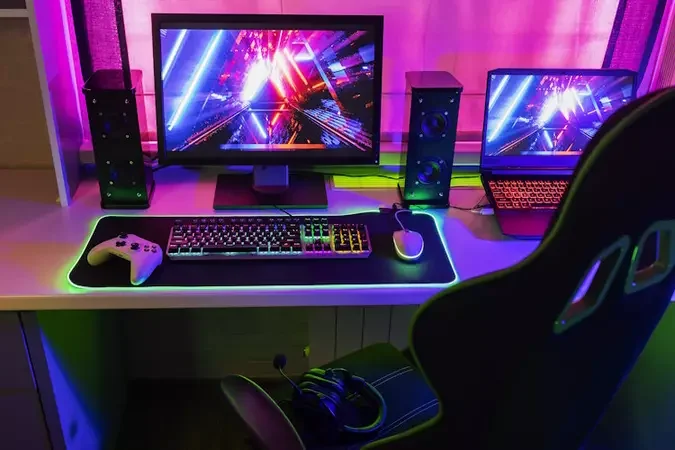

HardwarePCs
O que compõe um computador

Um PC é formado por vários componentes trabalhando juntos: o processador (CPU) executa as instruções, a placa-mãe conecta tudo, a memória RAM guarda dados temporários, o armazenamento (SSD/HD) guarda arquivos permanentemente, e a placa de vídeo (GPU) processa gráficos.
PC para jogos
Para rodar jogos atuais com boa qualidade, o componente mais importante é a placa de vídeo dedicada, seguida por um processador de médio/alto desempenho e pelo menos 16 GB de memória RAM. Um SSD também reduz bastante o tempo de carregamento dos jogos.
PC para trabalho leve
Para tarefas do dia a dia — navegação, documentos, videochamadas — um processador básico, 8 GB de RAM e um SSD (mesmo pequeno) já garantem uma experiência tranquila, sem necessidade de placa de vídeo dedicada.
Notebook ou desktop?

Notebooks oferecem mobilidade, mas geralmente custam mais caro por um desempenho equivalente e têm menos espaço para upgrades. Desktops são mais baratos, fáceis de atualizar peça por peça, mas ficam fixos em um só lugar.
Como escolher
O primeiro passo é definir o uso principal: jogos, trabalho, estudo ou edição de vídeo/imagem exigem configurações bem diferentes. Definir um orçamento e priorizar os componentes mais importantes para aquele uso específico evita gastar dinheiro com recursos que não serão aproveitados.